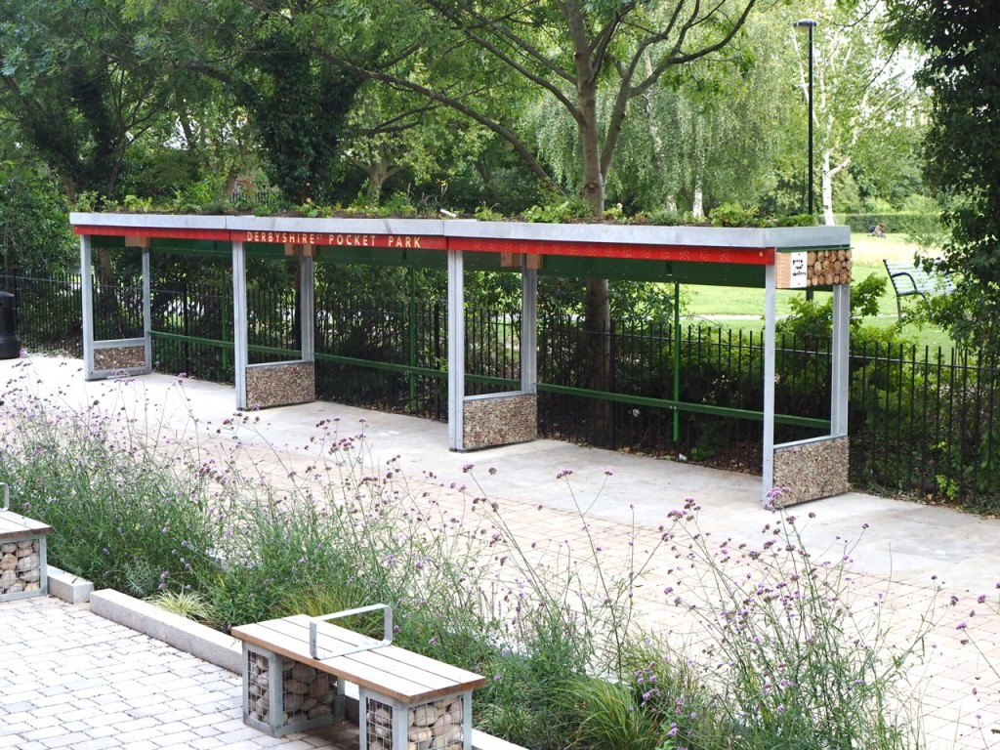

One day last week Green Roof Shelters installed covers for cycle parking in Bethnal Green.

(The cycle racks were to be installed next day by others!)
This new ‘pocket park’ is to be used as an exemplar of sustainable urban drainage design. The aim of sustainable urban drainage is that rain water doesn’t run off roads and pavements into our overloaded city drains. Instead the rain is used on green roofs, or runs into planting beds, or simply soaks into water-permeable paving. All these methods, and more, are used in Derbyshire Street Pocket Park. The shelters also provide lots of habitat for birds and beneficial pollinating insects.